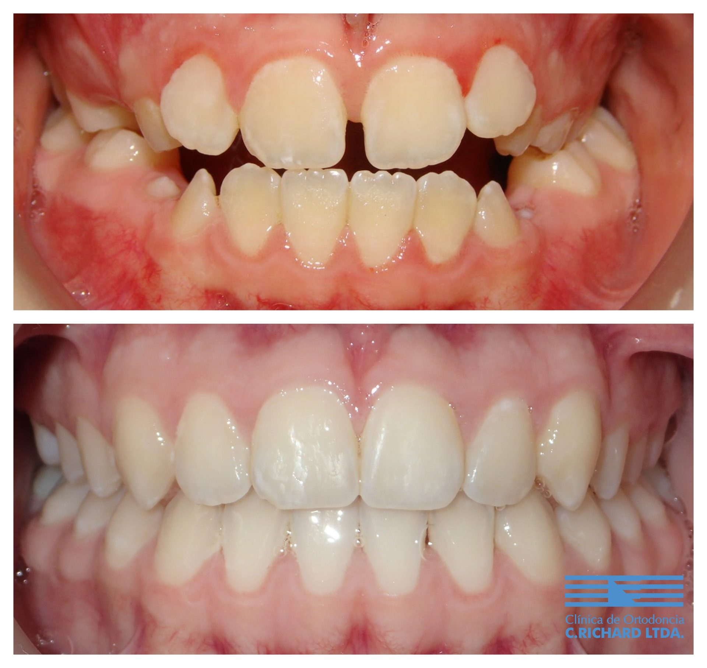

¿A qué edad llevar a un niño al ortodoncista?
Revisado por Dr. Alberto Del Real V., ortodoncista · Registro Superintendencia de Salud N° 312378 · Actualizado en octubre de 2026
La Asociación Americana de Ortodoncia (AAO) recomienda que todo niño tenga su primera evaluación con un ortodoncista a más tardar a los 7 años. No significa empezar un tratamiento a esa edad: la mayoría de los niños solo necesita controles. Pero algunos problemas —una mordida cruzada, un maxilar estrecho, falta severa de espacio o hábitos como chuparse el dedo— se corrigen mejor y más fácil mientras el niño está creciendo.

Señales para consultar antes
- Dientes de leche que se caen muy temprano o muy tarde.
- Dientes muy apiñados, separados o que salen fuera de lugar.
- Dientes de arriba que quedan por dentro de los de abajo (mordida cruzada), o que no se tocan adelante (mordida abierta).
- Mandíbula que se ve muy adelante o muy atrás.
- Respirar por la boca, roncar o dormir mal: ver respiración y sueño en niños.
- Chuparse el dedo o el chupete pasados los 4 o 5 años.
Ortodoncia interceptiva y ortopedia
Cuando conviene tratar temprano se usa ortodoncia interceptiva u ortopedia dentomaxilar: aparatos que guían el crecimiento de los maxilares o ganan espacio para los dientes que vienen. El objetivo es evitar que el problema se agrave y, muchas veces, simplificar o acortar el tratamiento de la adolescencia.
Qué incluye la evaluación en nuestra clínica
Examinamos al niño, escuchamos a la familia y explicamos si necesita tratamiento y cuál es el mejor momento. Al terminar, la familia recibe un informe de evaluación escrito con lo que se encontró, el plan propuesto y las mediciones del ancho de los maxilares comparadas con tablas de crecimiento por edad y sexo, más un tamizaje de respiración y sueño con instrumentos validados.
Para decidir el momento de tratar, nuestro equipo ha investigado cómo estimar la etapa de crecimiento a partir de la maduración de los molares:
- Diagnostic assessment of tooth maturation of the mandibular second molars as a skeletal maturation indicator: a retrospective longitudinal study
- Deep learning-based system for automated staging of lower molar maturation
Inteligencia artificial para estimar la maduración dentaria, que orienta el momento de tratar en pacientes en crecimiento.
Quién te atiende
Ortodoncistas especialistas, miembros de la AAO, la WFO y la Sociedad de Ortodoncia de Chile:


Preguntas frecuentes
¿A qué edad debe ir un niño al ortodoncista por primera vez?
A más tardar a los 7 años, según la recomendación de la Asociación Americana de Ortodoncia (AAO). Si los padres notan algo antes, se puede consultar antes.
¿Mi hijo tendrá que usar aparatos a los 7 años?
No necesariamente. La mayoría de los niños solo necesita controles hasta que llegue el momento adecuado. Se trata temprano solo cuando esperar empeoraría el problema.
¿Qué problemas conviene tratar temprano?
Mordidas cruzadas, maxilares estrechos, algunos casos de mandíbula adelantada, falta severa de espacio y hábitos como chuparse el dedo, entre otros.
¿La ortodoncia temprana evita los brackets después?
A veces sí y a veces no, pero suele hacer que el tratamiento posterior sea más simple y corto.